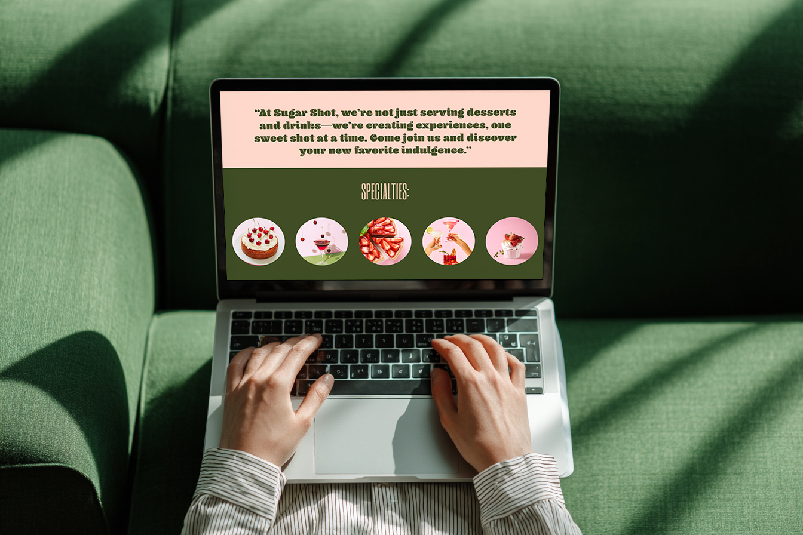
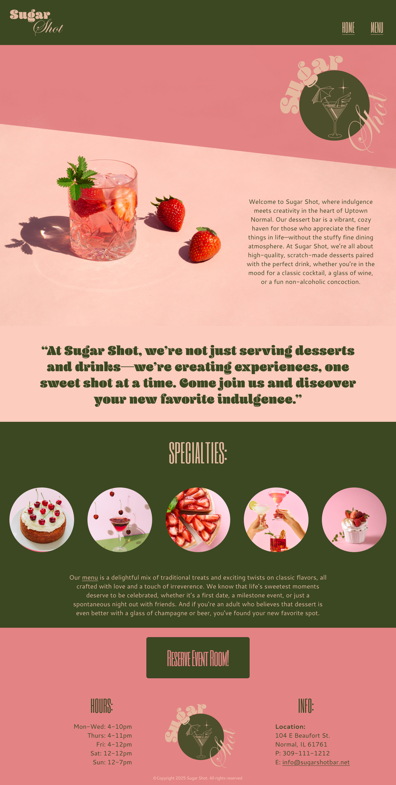

Sugar Shot Website
2025, HTML & CSS
This project showcases a website I designed for a fictional restaurant. I began by selecting a color palette and typefaces that captured the restaurant’s personality, then created a logo inspired by those design choices. From there, I brought the concept to life by building the website with HTML and CSS, guided by my creative vision for the brand.



